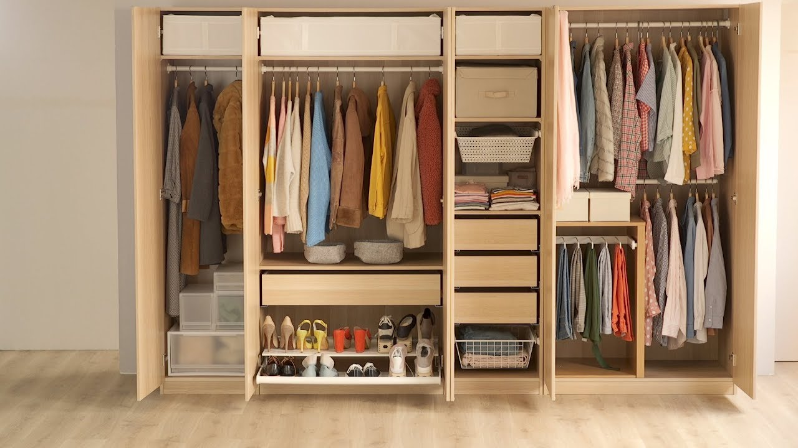

El armario debe ser muy versátil. Contar con las prendas correctas nos ayudará a crear infinidad de atuendos que serán los adecuados para cada ocasión.
Existen prendas básicas como los pantalones y las polos, que son perfectas siempre. Crear un guardarropa muchas veces depende de la edad y los gustos, sin embargo hay otras piezas que siempre deben estar, como los trajes o un buen par de camisas.

Un guardarropa versátil y adecuado para cualquier ocasión de la vida diaria
Impone tendencia con tu estilo
Todos tenemos algo en común, nos ponemos lo que más nos gusta, lo que nos funciona y nos hace sentir bien, en lugar de querer parecer el maniquí de la temporada. Podemos incorporar tendencias, pero de una forma sutil que corresponda a nuestro estilo personal.
No solo es importante vestir de manera elegante y adecuada, sino que al hacerlo tengamos seguridad y comodidad